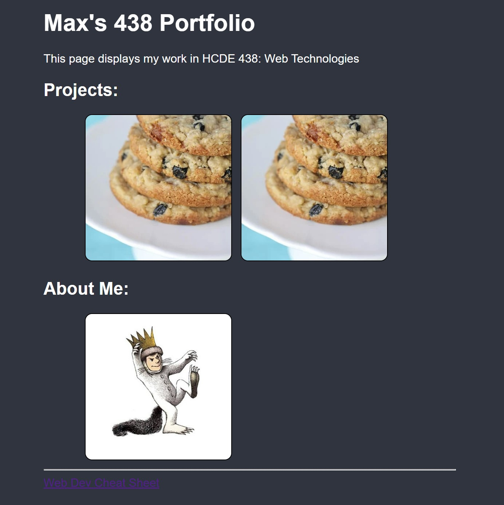

MP0: Portfolio Site Setup
Overview
After I had the bare-bones site hosted on my github, I started to build out a skeleton of the different pages outlined in the writeup. I wrote a basic 'About Me' page, then added images and linked it to the home page. I also added a very basic Cheat Sheet page.

Next, I played around with the CSS to change the style of the site. I added a CSS transition to the project cards. Finally, I put in this page to document my process as the MP0 writeup.
Issue
My biggest confusion during this process was immediately after I pushed my changees to the github origin. I didn't see the changes reflected, and immediately started troubleshooting. It turned out that my changes had been submitted, my browser had just saved the previous version of the site and wasn't updating it. This is resolved by clearing the browser's saved pages or switching browsers.
CSS Transition
I edited the transition for the project image cards to make them pop as the user mouses over them. They start with a low brightness, dark border, and rounded corners. As the user hovers over a project card, the image and border get brighter, and the corners stretch out a bit. This was done by setting a CSS transition for specific properties of an element, then changing those properties in the hover condition.

Future Plans
As I continue to work on this site, I'd like to add:
- Navigation Bar
- More Images
- Transitions
- Better Visual Style
- Modular Page Sections - w/ PHP?
Eventually, I'll add more projects and my resume and adapt this site into a personal portfolio page.